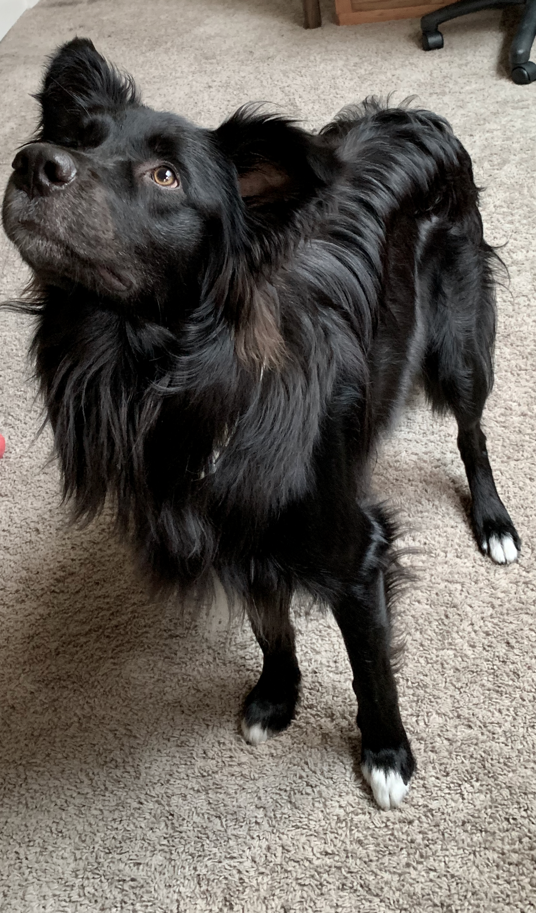
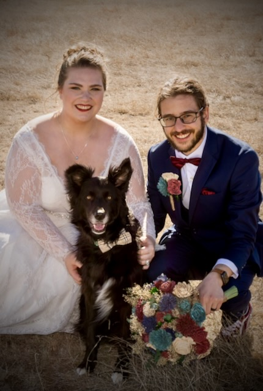
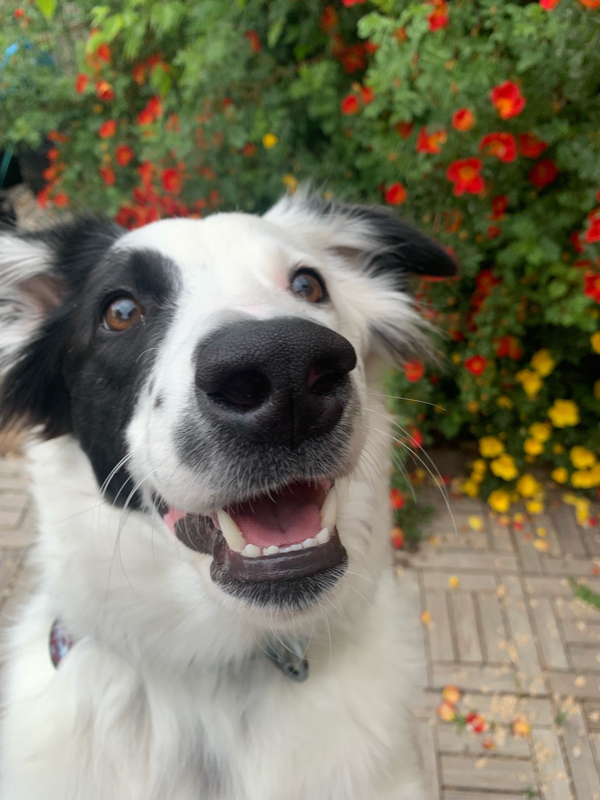
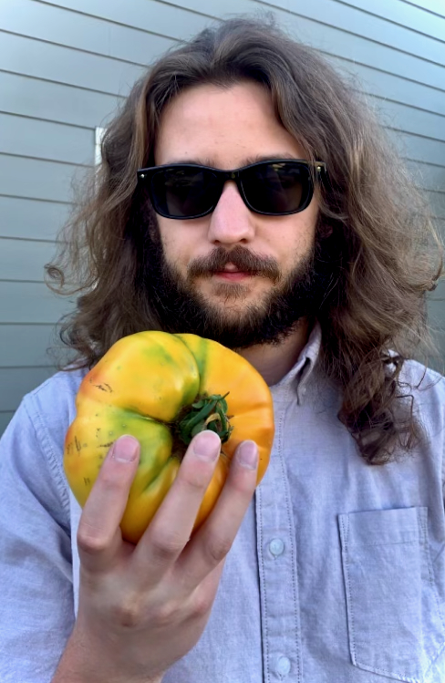
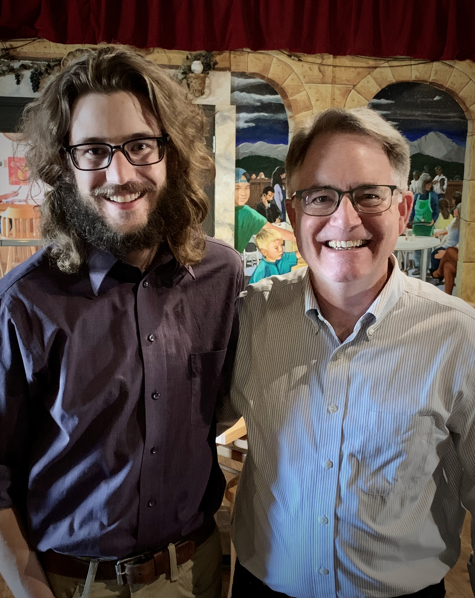
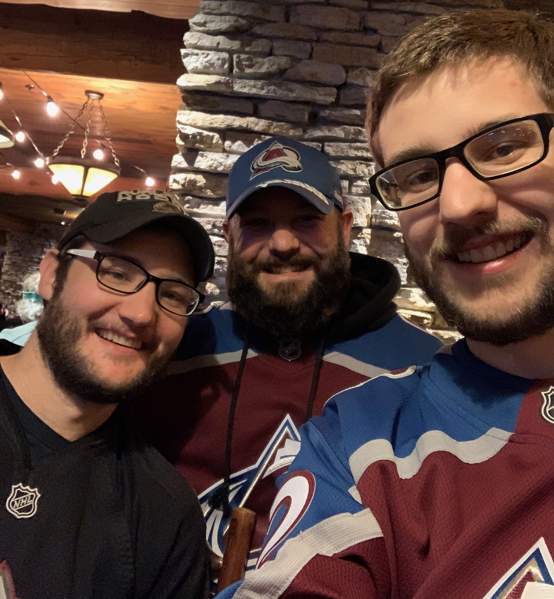
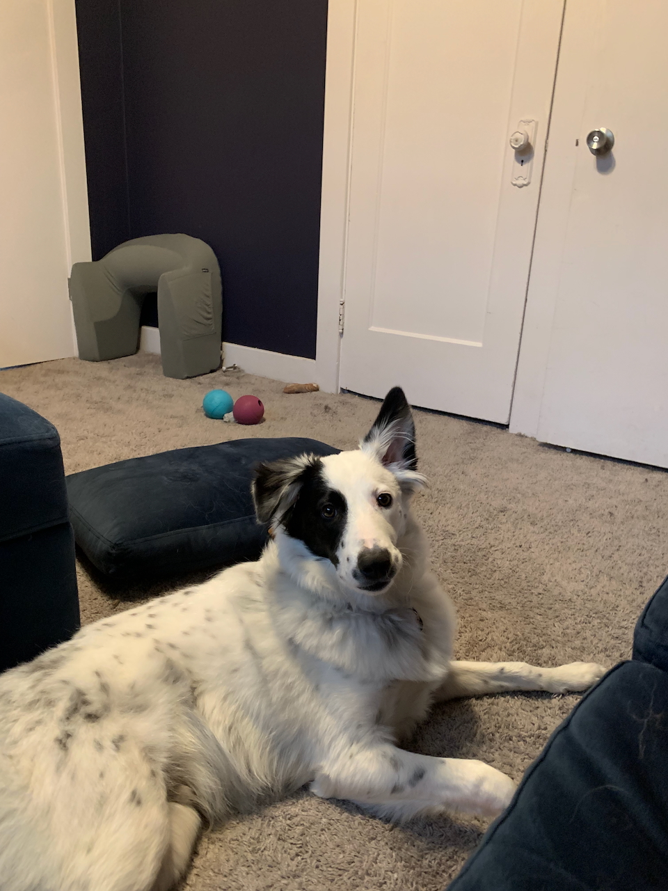
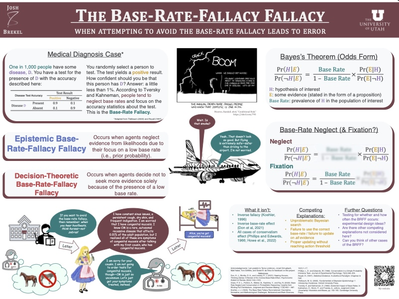

Princeton University
PhD, Psychology Start: 2026
Brekel, J., 2025. "A New Look at Keynesian Weight of Evidence." Erkenntnis. [Article] [Preprint]
DeJonge, K. C., Thorp, K. R., Brekel, J., Pokoski, T., Trout, T.J., 2024. "Customizing pyfao56 for Evapotranspiration Estimation and Irrigation Scheduling at the Limited Irrigation Research Farm, Greeley, Colorado." Agricultural Water Management, 299. https://doi.org/10.1016/j.agwat.2024.108891
Thorp, K. R., Brekel, J., DeJonge, K. C., 2023. "Version 1.2.0 - pyfao56: FAO-56 Evapotranspiration in Python." SoftwareX, 24, 101518. https://doi.org/10.1016/j.softx.2023.101518
Brekel, J., Thorp, K. R., DeJonge, K. C., Trout, T. J., 2023. "Version 1.1.0 - pyfao56: FAO-56 Evapotranspiration in Python." SoftwareX, 22, 101336. https://doi.org/10.1016/j.softx.2023.101336
Princeton University
PhD, Psychology Start: 2026
University of Utah
MS, Philosophy 2024 | 2026
Colorado State University
MA, Philosophy 2020 | 2022
BA, Economics 2016 | 2019
BA, Philosophy 2016 | 2019
Click the semester to download a syllabus, or right-click to open a syllabus in a new tab.









I heard a picture speaks 1,000 words. I don't know about that...But, scrolling above will probably tell you a thing or two about me.

Click to view my most recent research poster.